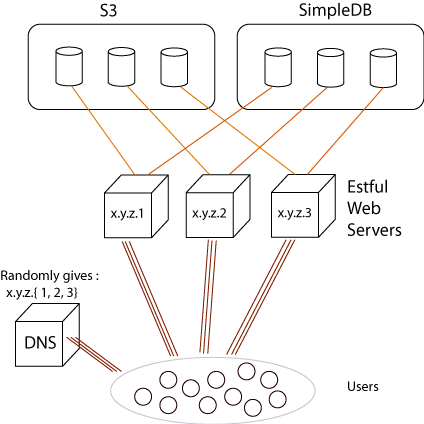

This story is an unfinished draft.
I built Estful, a site for sharing recipes and talking about food, for three reasons:
As a hobby project, this was a great success on all three fronts (though I did get some strange looks programming on a public bus).
The web server is Jetty, sitting on an Amazon EC2 instance. It is implemented without frameworks, without a templating library, in simple direct servlets. Scala's XML literal syntax provides the equivalent to templating:
class Frontpage extends HttpServlet {
def frontPage() = {
val body = ...
<html>
<head>
<title>The front page!</title>
{ Snippits.headers }
</head>
<body>
{ body }
</body>
</html>
}
override def doGet(req: HttpServletRequest, res: HttpServletResponse) = {
res.setContentType("text/html")
val out = new PrintWriter(res.getOutputStream)
out.println("<!DOCTYPE html>")
out.println(xml.Xhtml.toXhtml(frontPage, true, false))
out.close
}
}
This is where the server started, but even after adding support for headers such as Last-Modified and ETag, and request caching to minimise calls to SimpleDB, the doGet() machinery is less than 50 lines long.
From here I found the programming of the site was largely dictated by a few key technical decisions made early on, so I will start with those.
The server maintains no inter-request state in memory or on disk. Each request looks up any relevant user session or mutable site data in SimpleDB and S3.
Of course, this sounds slow. And when you first set it up, it is slow. Every HTTP request to Estful involves a couple of HTTP requests be sent to the SimpleDB and S3 entry points, and they must return before the client sees a page.
This means when you are the only user, page generation time is measured in milliseconds. Set up a MySQL database and a PHP web site with a connection pool and page generation time for a single user will be well under a millisecond. So why go to the trouble of building a stateless server? Because when you are not the only user, when you are one of thousands, page generation time is still measured in milliseconds.
Both SimpleDB and S3 are designed so you can increase the number of requests from different machines without increasing average response time. With a stateless server, it is trivial to run multiple web servers and load balance even using simple DNS round-robin.

All the issues of communicating between servers are handled by Amazon's eventual consistency, assuming your site is designed to the next principle:
When someone writes a new article, it gets a new id, and the text and images are stored under new revision ids. When the article is edited, the next text is saved to a new revision. To display the article, find the newest revision (some overwriting is done for pointing to the newest version of data, for speed).
By simply appending changes to the database with a timestamp and random ids, there is no data loss by collision. The only place this is not true is usernames, where I chose to use the actual username given by the user as an identifier, instead of generating a random id. This means user creation must be synchronized outside of SimpleDB to avoid overwriting, as eventual consistency offers no locking. In reterospect, this was probably a mistake. Users could also be append only if I had give them random ids.
Most requests come from people not logged in, viewing the site through the same lens. Some users are logged in and need extra information on a page, like what articles and comments they have voted on. To manage to both keep the server design simple and do page caching, my solution for now is make logged in users make two HTTP requests. The first pulls down the page, and the second, via JavaScript and XHR, requests extra information in a JSON format and rearranges the page to match.
At the cost of another request for the minority of users, we get to take easy advantage of the Last-Modified, ETag, and cache headers. We can also reduce calls to SimpleDB and S3: when the server constructs a page to send, it keeps a webserver-local copy with the last-modified date. If another request comes in, it can just check the last-modified date against SimpleDB, or if little-enough time has passed, not even bother and serve the page straight out. This brings up performance by reducing database calls.
S3 is not just used to store text too large to fit in SimpleDB, it also stores all the recipe photos. Instead of serving those out from my own server, I just make them public and serve them directly from S3. This let's the server get on with what it's good at: managing text.
It also means if the site becomes busy enough, the photos can be served by CloudFront to improve response times for end user.
By David Crawshaw, February 2010.